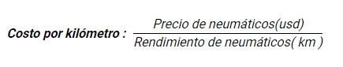

Indicador Costo por Kilómetro (Nuevos) 2021
No se consideran neumáticos en SCRAP

| Proceso |
Indicador |
Marca |
Modelo (N) |
Medidas |
Criterio de Aceptación |
Marzo |
Abril |
Mayo |
| KPI |
COSTO X KILOMETRO |
YOKOHAMA |
MY507 |
12R22.5 |
| ( Objetivo < |
0.0130 ) |
| ( Tolerable |
[0.0150 - 0.0130] ) |
| ( Deficiente > |
0.0150 ) |
|
0.0089 |
0.0094 |
0.0040 |
| YOKOHAMA |
LY053 |
12R22.5 |
| ( Objetivo < |
0.0110 ) |
| ( Tolerable |
[0.0130 - 0.0110] ) |
| ( Deficiente > |
0.0130 ) |
|
0.0178 |
0.0264 |
0.0142 |
| YOKOHAMA |
LY053 |
11.00R20 |
| ( Objetivo < |
0.0115 ) |
| ( Tolerable |
[0.0140 - 0.0115] ) |
| ( Deficiente > |
0.0140 ) |
|
0.0040 |
0.0006 |
0.0006 |